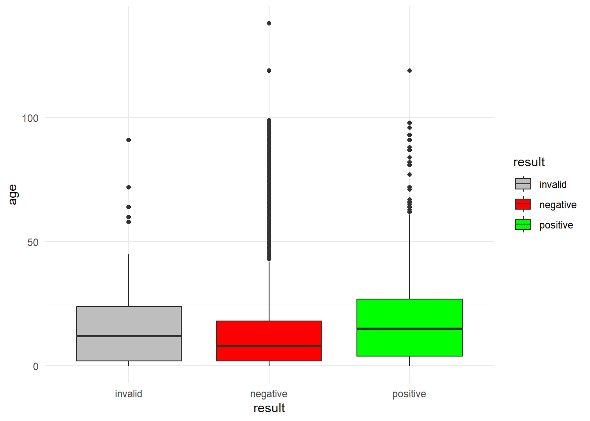

Variable |
Total |
female |
male |
|---|---|---|---|
| age | 9 (2, 18) | 9 (2, 18) | 9 (2, 18) |
| Test Results | |||
| invalid | 301 (1.9%) | 146 (1.9%) | 155 (2.0%) |
| negative | 14,358 (92%) | 7,237 (92%) | 7,121 (93%) |
| positive | 865 (5.6%) | 449 (5.7%) | 416 (5.4%) |
| Did use drive thru site | 7,987 (51%) | 4,035 (52%) | 3,952 (51%) |
| Time (hours) between collection of sample and lab received | 1.90 (0.70, 3.60) | 1.90 (0.70, 3.60) | 1.90 (0.70, 3.60) |
| Time (hours) between lab received sample and test verifcation | 5.00 (4.00, 6.20) | 5.00 (4.00, 6.20) | 5.00 (4.00, 6.10) |
Drive Thru COVID-19 Testing Data Results
Data Description
This data was collected from various COVID-19 sites, drive thru locations, and clinics. It focused primarily on the results from those under the age of 18 years old.
Table 1 - Summary Statistics
The median and IQR for age is 9 (2, 18) years old.
The overall positive test results are 865 (5.6%) out of the total 15,524 tests conducted.
Regression Results
Dependent variable is y= age, regressed off of the following variables: result , gender, and clinic name.
Variable |
N |
Beta |
95% CI 1 |
p-value |
|---|---|---|---|---|
| Test Results | 15,524 | |||
| invalid | — | — | ||
| negative | -1.0 | -2.9, 0.85 | 0.3 | |
| positive | 4.2 | 2.1, 6.4 | <0.001 | |
| Gender | 15,524 | |||
| female | — | — | ||
| male | 0.18 | -0.33, 0.70 | 0.5 | |
| Testing Location | 15,524 | |||
| 1 laboratory | — | — | ||
| 3 laboratory | 3.7 | -21, 28 | 0.8 | |
| anes resource ctr | 2.1 | -20, 24 | 0.9 | |
| apheresis | 12 | -19, 42 | 0.5 | |
| autopsy | 2.5 | -15, 20 | 0.8 | |
| bed management center | -8.7 | -40, 22 | 0.6 | |
| behavioral hosp | 9.8 | -5.9, 25 | 0.2 | |
| bmc | 78 | 47, 108 | <0.001 | |
| cardiac echo | -6.3 | -31, 18 | 0.6 | |
| cardiac ekg | -1.9 | -20, 16 | 0.8 | |
| cardiology | -7.5 | -29, 14 | 0.5 | |
| care ntwk | -1.9 | -17, 14 | 0.8 | |
| cc care ntwk | -0.81 | -16, 15 | >0.9 | |
| clinical lab | 8.7 | -6.7, 24 | 0.3 | |
| day surgery | -5.3 | -36, 25 | 0.7 | |
| department of anatomic pathology | 7.5 | -12, 27 | 0.5 | |
| diag ed radiology | -1.7 | -23, 20 | 0.9 | |
| diag rad | -1.3 | -32, 29 | >0.9 | |
| diag radiology | -3.2 | -25, 19 | 0.8 | |
| dialysis | -4.7 | -22, 13 | 0.6 | |
| emergency dept | -1.6 | -17, 14 | 0.8 | |
| employee health | 30 | 12, 47 | <0.001 | |
| fluoro radiology | 2.2 | -22, 27 | 0.9 | |
| gastroenterology | 3.2 | -21, 28 | 0.8 | |
| gi endoscopy ste | 2.7 | -22, 27 | 0.8 | |
| gol | 49 | 33, 64 | <0.001 | |
| heart station | -2.0 | -18, 14 | 0.8 | |
| hem onc day hosp | -2.4 | -18, 13 | 0.8 | |
| hematology | 0.67 | -30, 31 | >0.9 | |
| hosp | 16 | -2.4, 35 | 0.087 | |
| hosp of the university | 39 | 23, 54 | <0.001 | |
| inpatient ward a | -7.9 | -23, 7.6 | 0.3 | |
| inpatient ward b | -4.3 | -20, 11 | 0.6 | |
| inpatient ward c | -2.7 | -18, 13 | 0.7 | |
| inpatient ward d | -3.2 | -19, 13 | 0.7 | |
| inpatient ward e | -3.0 | -19, 13 | 0.7 | |
| inpatient ward f | 10 | -5.8, 27 | 0.2 | |
| inpatient ward g | -6.5 | -22, 9.3 | 0.4 | |
| inpatient ward h | -6.4 | -22, 9.2 | 0.4 | |
| inpatient ward i | -3.7 | -19, 12 | 0.6 | |
| inpatient ward j | -3.4 | -19, 12 | 0.7 | |
| inpatient ward k | -4.2 | -20, 11 | 0.6 | |
| inpatient ward l | -2.8 | -19, 14 | 0.7 | |
| inpatient ward m | -4.9 | -21, 11 | 0.5 | |
| inpatient ward n | -4.0 | -20, 12 | 0.6 | |
| inpatient ward o | -2.7 | -18, 13 | 0.7 | |
| inpatient ward p | -4.5 | -20, 11 | 0.6 | |
| inpatient ward q | -3.7 | -20, 13 | 0.7 | |
| inpatient ward r | 2.0 | -14, 18 | 0.8 | |
| inpatient ward s | 2.2 | -14, 19 | 0.8 | |
| inpatient ward t | -5.7 | -21, 10 | 0.5 | |
| inpatient ward u | -0.55 | -18, 16 | >0.9 | |
| inpatient ward v | -2.7 | -20, 15 | 0.8 | |
| inpatient ward w | 8.7 | -22, 39 | 0.6 | |
| inpatient ward x | -2.3 | -33, 28 | 0.9 | |
| interventional rad | -7.3 | -38, 23 | 0.6 | |
| intl patient svcs | 10 | -5.5, 26 | 0.2 | |
| laboratory | 11 | -4.5, 27 | 0.2 | |
| line clinical lab- | 46 | 30, 61 | <0.001 | |
| medical center | 38 | 23, 54 | <0.001 | |
| mri | -3.0 | -25, 19 | 0.8 | |
| mri-mag resonance | 1.9 | -18, 22 | 0.9 | |
| neurology | 0.67 | -30, 31 | >0.9 | |
| neurosurgery | -8.6 | -39, 22 | 0.6 | |
| nicu | -8.6 | -24, 6.9 | 0.3 | |
| ob gyn | 13 | -2.5, 29 | 0.10 | |
| onco holding | -3.3 | -34, 27 | 0.8 | |
| oncology day hosp | -3.4 | -19, 12 | 0.7 | |
| oncology holding | -7.3 | -38, 23 | 0.6 | |
| orthopedics | -6.8 | -31, 18 | 0.6 | |
| otolaryngology | -1.5 | -21, 18 | 0.9 | |
| outpatient | 39 | 7.8, 69 | 0.014 | |
| ped gen thor surg | -7.8 | -32, 17 | 0.5 | |
| periop complex | -1.5 | -19, 16 | 0.9 | |
| pet radiology | 11 | -20, 41 | 0.5 | |
| picu | -0.31 | -16, 15 | >0.9 | |
| plastics imaging | 11 | -20, 41 | 0.5 | |
| pulmonary | 8.7 | -22, 39 | 0.6 | |
| radiation oncology | -7.4 | -23, 8.1 | 0.4 | |
| s care ntwk | -1.2 | -17, 14 | 0.9 | |
| sedation unit | 0.67 | -24, 25 | >0.9 | |
| transfusion | -0.64 | -18, 16 | >0.9 | |
| ultrasound | 3.7 | -17, 24 | 0.7 | |
| university hosp | 30 | 5.5, 54 | 0.016 | |
| urg care ctr | 5.9 | -11, 22 | 0.5 | |
| urgent care center | -1.9 | -18, 14 | 0.8 | |
| urology | 6.7 | -24, 37 | 0.7 | |
| virology | 16 | -0.17, 32 | 0.053 | |
| 1
CI = Confidence Interval |
||||
Figure 1 - Boxplot of test results and age
Results are color coded with the key in the graph Boxplot findings are consistant with regression model findings between age and test results
